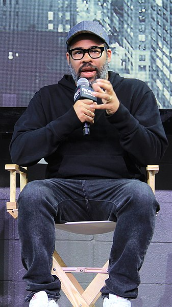

Horror Movies Set in Michigan
10/13/2024
Jonathan Topolinski
With Halloween around the corner I wanted to have the first post be about 4 horror movies set in or have ties Michigan. with one being made by an alumni from Michigan State University. the first on my list is a classic
The Crow (1994) Detroit
The movie is about a couple murdered before there wedding and the groom rises from the grave as "The Crow"to get revenge
Don't Breathe (2016) Detroit
Follows three thieves how thought they found the perfect target a blind Veteran little did they know what they are in for.
Pitchfork (2017) Clare
Indie film about a college student who brings his friends back home from New York to party but little did they know there was a killer waiting to hunt them down with a pitchfork.
The Evil Dead (1981) Tennesse
some college students from Michigan State University go on a trip to a wooded area in tennese and read from the book of the dead and wake evil spirits.
Jordan Peele From Comedy to Horror
10/13/2024
Jonathan Topolinski
Jordan Peele has been taking over the horror scene. Becoming one of the most known horror director in only five years since entering the horror scene. but what most people have known him for was his comedy show that he did with is partner Keegan-Micheal Key called Key and Peele a comedy sketch show that aired on comedy Central from 2012 -2015. after that ended Peele decided to direct a horror social thriller called Get Out (2017), which was an amazing hit winning three Oscars. with the sucess of Get Out Peele, continued with US (2019), also a social thriller, It did not do as well but was still a sucess. Peeles unique brand of horror and his abality to tackle horror genres not many take on such as social thriller or sci-fi western Nope(2022). has made people big fans of his metoric rise and can not wait to see what he does next
